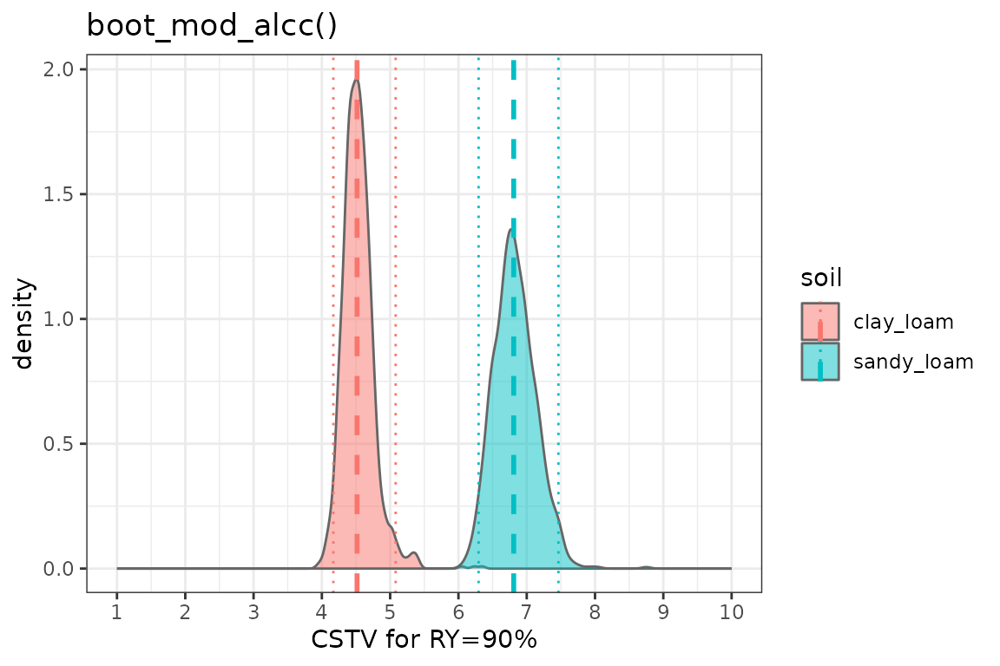
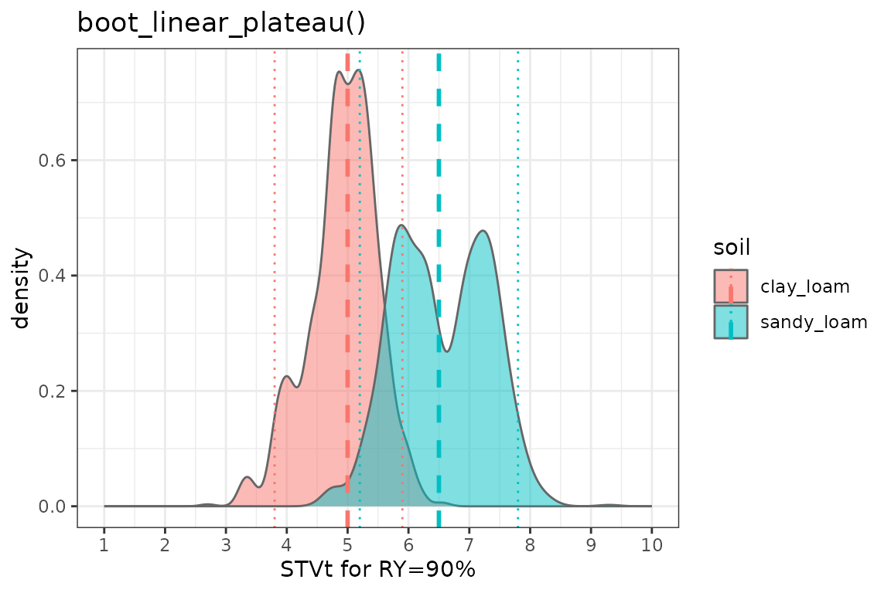
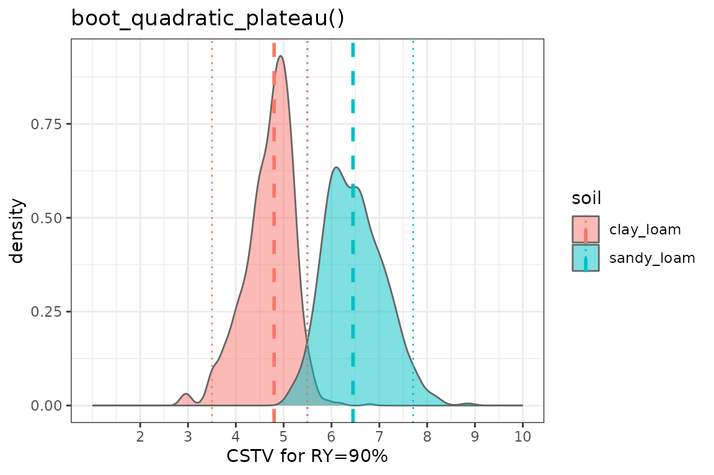
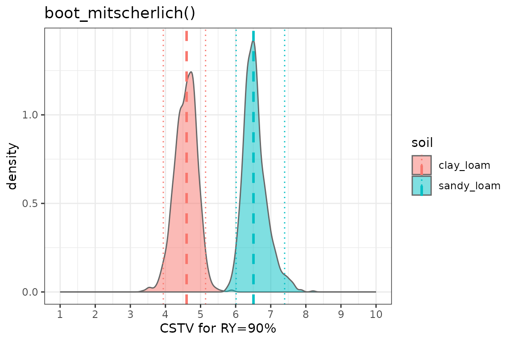

Bootstrapping
Adrian Correndo, Austin Pearce
Source:vignettes/bootstrapping_tutorial.Rmd
bootstrapping_tutorial.Rmd
Description
This tutorial is intended to show how to implement bootstrapping to the soiltestcorr functions.
What is bootstrapping?
Bootstrapping is a technique introduced in late 1970’s by Bradley Efron (Efron, 1979). It is a general purpose inferential approach that is useful for robust estimations, especially when the distribution of a statistic of quantity of interest is complicated or unknown (Faraway, 2014). It provides an alternative to perform confidence statements while relaxing the famous assumption of normality (Efron and Tibshirani, 1993). The underlying concept of bootstrapping is that the inference about a population parameter or quantity can be modeled by “resampling” the available data.
How does it work?
In soiltestcorr, bootstrapping means resampling cases
with replacement. That means that it draws random samples from the
original data while maintaining the same original size (i.e, some
observations may be included multiple times while others may not be
sampled at all). Let’s suppose that we have a dataset with 50
observations (one per row). We first create
bootstraps/replicates/samples by randomly sampling those 50 observations
many times (e.g., 1,000 times). Each random sample has 50 total
observations, conserving the same number of observations as the original
data (50). Finally, we fit a chosen model to each of the 1000 samples,
which, in the context of soiltestcorr, could result in a distribution of
1,000 estimates of a critical soil test value (CSTV), for example.
In general, the larger the number of observations and resamples, the
more likely we’ll obtain a representative distribution of the
population’s quantity of interest. The minimum number of iterations
generally recommended is n = 1000. The number used is up to
the user, and may represent a compromise between the quality of the
outcomes and the necessary computational power or time for the
iterations. If the final results from 1,000 samples is no different than
10,000 samples, the time savings may warrant fewer samples.
Once the distribution is obtained we may obtain a “summary” describing “moments” of the distribution such as the “mean”, “median”, “standard deviation”, “quantiles”, etc.. Very frequently, the general procedure is to extract the “median” (which is more robust to outliers than the mean), the 0.025- and 0.975-quantiles from the distribution (equivalent to 2.5th and 97.5th percentiles) in order to obtain the conventional 95% confidence interval. This interval in normally used to test hypotheses of interest (e.g. comparing groups, methods, etc.)
The soiltestcorr::boot_() functions
You can implement bootstrapping to each of the six soiltestcorr
available models, which count with their own boot_…()
functions:
Each boot_…() function presents the same basic arguments
than their respective original functions (i.e., data,
stv, and ry), with the addition of two
arguments related to the resampling:
n, indicating the number of resamples to perform iterations...., indicating open arguments that allow you to add grouping variable/s (factor or character) for running the bootstrapping by group. Be sure that these open arguments are placed by the end of each function.
Examples
The following is a simple example using a simulated dataset that contains soil test values (STV) and relative yield (RY) for two different groups of soil: “clay_loam” and “sandy_loam”.
If you have groups in your data, you can specify the grouping variable/s as arguments in order to maintain within each bootstrap sample the same proportion of observations than in the original dataset. This will return a tibble for each sample with as many rows as the resampling size (n) containing the results.
The objective in this example is to obtain critical soil test values (CSTV) with confidence intervals at 90% RY for each of the different models that soiltestcorr offers.
library(soiltestcorr)
#> Registered S3 methods overwritten by 'ggpp':
#> method from
#> heightDetails.titleGrob ggplot2
#> widthDetails.titleGrob ggplot2Suggested packages
# Install if needed
library(ggplot2) # Plots
library(dplyr) # Data wrangling
library(tidyr) # Data wrangling
library(purrr) # Mapping
theme_set(theme_minimal())Data
# Clay loam simulated dataset
clay_loam <- dplyr::tibble(
"soil" = "clay_loam",
"RY" = c(65,80,85,88,90,94,93,96,97,95,98,100,99,99,100),
"STV" = seq(1, 15, by = 1) )
# Sandy loam simulated dataset
sandy_loam <- dplyr::tibble(
"soil" = "sandy_loam",
"RY" = c(55,70,80,84,89,92,90,94,99,92,96,100,100,99,99),
"STV" = seq(2, 16, by = 1))
# Merging soils datasets
dataframe_soils <- bind_rows(clay_loam, sandy_loam)1. boot_cn_1965()
set.seed(123)
boot_cn_65 <- boot_cn_1965(data = dataframe_soils,
stv = STV, ry = RY,
target = 90,
n = 100, # only 100 replicates to save compute time on demo
# Group by soil
soil = soil)
# CSTV Confidence Interval
boot_cn_65_sum <- boot_cn_65 %>%
group_by(soil) %>%
# Obtain quantiles of interest
summarise(q025 = quantile(CSTV, prob = 0.025, na.rm = TRUE),
median = quantile(CSTV, prob = 0.500, na.rm = TRUE),
q975 = quantile(CSTV, prob = 0.975, na.rm = TRUE)) %>%
ungroup()
# Plot CSTV
boot_cn_65 %>%
ggplot2::ggplot(aes(x = CSTV))+
geom_density(aes(fill = soil), color = "grey40", alpha = 0.5)+
# Draw lines
geom_vline(data = boot_cn_65_sum, aes(xintercept = median, color = soil),
linetype = "dashed", linewidth = 1)+
geom_vline(data = boot_cn_65_sum, aes(xintercept = q025, color = soil),
linetype = "dotted", linewidth = 0.5)+
geom_vline(data = boot_cn_65_sum, aes(xintercept = q975, color = soil),
linetype = "dotted", linewidth = 0.5)+
scale_x_continuous(limits = c(1,10), breaks = seq(1, 10, by = 1))+
labs(title = "boot_cn_1965()", x = "CSTV for RY=90%")
2. boot_cn_1971()
Note: for the Cate & Nelson (1971) approach, it is not possible to set a RY target for the CSTV estimation. It simply estimates the most efficient division of the data into the four quadrants in order to maximize the number of observations into positive quadrants.
set.seed(123)
boot_cn_71 <- boot_cn_1971(data = dataframe_soils,
stv = STV, ry = RY,
n = 100, # only 100 replicates to save compute time on demo
# Group by soil
soil = soil)
# CSTV Confidence Interval
boot_cn_71_sum <- boot_cn_71 %>%
group_by(soil) %>%
# Obtain quantiles of interest
summarise(q025 = quantile(CSTV, prob = 0.025, na.rm = TRUE),
median = quantile(CSTV, prob = 0.500, na.rm = TRUE),
q975 = quantile(CSTV, prob = 0.975, na.rm = TRUE))
# Plot CSTV
boot_cn_71 %>%
ungroup() %>%
ggplot2::ggplot(aes(x = CSTV, y = CRYV))+
geom_density_2d(aes(color = soil), shape = 21, alpha = 0.5)+
# Draw lines
geom_vline(data = boot_cn_71_sum, aes(xintercept = median, color = soil),
linetype = "dashed", linewidth = 1)+
scale_x_continuous(limits = c(1,10), breaks = seq(1, 10, by = 1))+
labs(title = "boot_cn_1971()", x = "CSTV for CRYV", y = "RV (%) at CSTV")
3. boot_mod_alcc()
set.seed(123)
boot_alcc <- boot_mod_alcc(data = dataframe_soils,
stv = STV, ry = RY,
target = 90, n = 1000,
# Group by id
soil = soil)
# CSTV Confidence Interval
boot_alcc_sum <- boot_alcc %>%
group_by(soil) %>%
# Obtain quantiles of interest
summarise(q025 = quantile(CSTV, prob = 0.025, na.rm = TRUE),
median = quantile(CSTV, prob = 0.500, na.rm = TRUE),
q975 = quantile(CSTV, prob = 0.975, na.rm = TRUE))
# Plot CSTV
boot_alcc %>%
ungroup() %>%
ggplot2::ggplot(aes(x = CSTV))+
geom_density(aes(fill = soil), color = "grey40", alpha = 0.5)+
# Draw lines
geom_vline(data = boot_alcc_sum, aes(xintercept = median, color = soil),
linetype = "dashed", linewidth = 1)+
geom_vline(data = boot_alcc_sum, aes(xintercept = q025, color = soil),
linetype = "dotted", linewidth = 0.5)+
geom_vline(data = boot_alcc_sum, aes(xintercept = q975, color = soil),
linetype = "dotted", linewidth = 0.5)+
scale_x_continuous(limits = c(1,10), breaks = seq(1, 10, by = 1))+
labs(title = "boot_mod_alcc()", x = "CSTV for RY=90%")+
theme_bw()
2. boot_linear_plateau()
set.seed(123)
boot_lp <- boot_linear_plateau(data = dataframe_soils,
stv = STV, ry = RY,
target = 90, n = 1e3,
# Group by soil
soil = soil)
# CSTV Confidence Interval
boot_lp_sum <- boot_lp %>%
group_by(soil) %>%
# Obtain quantiles of interest
# Note: for linear_plateau, the CSTV for a specific RY target = STVt
summarise(q025 = quantile(STVt, prob = 0.025, na.rm = TRUE),
median = quantile(STVt, prob = 0.500, na.rm = TRUE),
q975 = quantile(STVt, prob = 0.975, na.rm = TRUE))
# Plot STVt
boot_lp %>%
ungroup() %>%
ggplot2::ggplot(aes(x = STVt))+
geom_density(aes(fill = soil), color = "grey40", alpha = 0.5)+
# Draw lines
geom_vline(data = boot_lp_sum, aes(xintercept = median, color = soil),
linetype = "dashed", linewidth = 1)+
geom_vline(data = boot_lp_sum, aes(xintercept = q025, color = soil),
linetype = "dotted", linewidth = 0.5)+
geom_vline(data = boot_lp_sum, aes(xintercept = q975, color = soil),
linetype = "dotted", linewidth = 0.5)+
scale_x_continuous(limits = c(1,10), breaks = seq(1, 10, by = 1))+
labs(title = "boot_linear_plateau()", x = "STVt for RY=90%")+
theme_bw()
3. boot_quadratic_plateau()
set.seed(123)
boot_qp <- boot_quadratic_plateau(data = dataframe_soils,
stv = STV, ry = RY,
target = 90, n = 1000,
# Group by soil
soil = soil)
#> Error in nlsModel(formula, mf, start, wts) :
#> singular gradient matrix at initial parameter estimates
#> Error in nlsModel(formula, mf, start, wts) :
#> singular gradient matrix at initial parameter estimates
# CSTV Confidence Interval
boot_qp_sum <- boot_qp %>%
group_by(soil) %>%
# Obtain quantiles of interest
# Note: for quad_plateau, the CSTV for a specific RY target = STVt
summarise(q025 = quantile(STVt, prob = 0.025, na.rm = TRUE),
median = quantile(STVt, prob = 0.500, na.rm = TRUE),
q975 = quantile(STVt, prob = 0.975, na.rm = TRUE))
# Plot STVt
boot_qp %>%
ungroup() %>%
ggplot2::ggplot(aes(x = STVt))+
geom_density(aes(fill = soil), color = "grey40", alpha = 0.5)+
# Draw lines
geom_vline(data = boot_qp_sum, aes(xintercept = median, color = soil),
linetype = "dashed", linewidth = 1)+
geom_vline(data = boot_qp_sum, aes(xintercept = q025, color = soil),
linetype = "dotted", linewidth = 0.5)+
geom_vline(data = boot_qp_sum, aes(xintercept = q975, color = soil),
linetype = "dotted", linewidth = 0.5)+
scale_x_continuous(limits = c(1,10), breaks = seq(2, 10, by = 1))+
labs(title = "boot_quadratic_plateau()", x = "CSTV for RY=90%")+
theme_bw()
4. boot_mitscherlich()
set.seed(123)
boot_mits <- boot_mitscherlich(data = dataframe_soils,
stv = STV, ry = RY, type = 1,
target = 90, n = 1e3,
# Group by soil
soil = soil)
# CSTV Confidence Interval
boot_mits_sum <- boot_mits %>%
group_by(soil) %>%
# Obtain quantiles of interest
summarise(q025 = quantile(CSTV, prob = 0.025, na.rm = TRUE),
median = quantile(CSTV, prob = 0.500, na.rm = TRUE),
q975 = quantile(CSTV, prob = 0.975, na.rm = TRUE))
# Plot CSTV
boot_mits %>%
ungroup() %>%
ggplot2::ggplot(aes(x = CSTV))+
geom_density(aes(fill = soil), color = "grey40", alpha = 0.5)+
# Draw lines
geom_vline(data = boot_mits_sum, aes(xintercept = median, color = soil),
linetype = "dashed", linewidth = 1)+
geom_vline(data = boot_mits_sum, aes(xintercept = q025, color = soil),
linetype = "dotted", linewidth = 0.5)+
geom_vline(data = boot_mits_sum, aes(xintercept = q975, color = soil),
linetype = "dotted", linewidth = 0.5)+
scale_x_continuous(limits = c(1,10), breaks = seq(1, 10, by = 1))+
labs(title = "boot_mitscherlich()", x = "CSTV for RY=90%")+
theme_bw()
set.seed()
Note the use of set.seed() prior to bootstrapping
ensures that results are reproducible. Even though random sampling is
being used, set.seed() gives “an integer vector, containing
the random number generator (RNG) state for random number generation in
R.” This means that next time the code is run, the same bootstrap
samples can be reproduced. Without set.seed(), your results
will vary (even if just slightly) each time the code is run.
References
Davison, A., Hinkley, D. (1997). Bootstrap Methods and their Application (Cambridge Series in Statistical and Probabilistic Mathematics). Cambridge: Cambridge University Press. https://doi.org/10.1017/CBO9780511802843
Efron, B. 1979. “Bootstrap Methods: Another Look at the Jackknife.” The Annals of Statistics 7 (1). https://doi.org/10.1214/aos/1176344552
Efron, B., Tibshirani, R.J. 1993. “Efficient Bootstrap Computations.” In, 338–57. Springer US. https://doi.org/10.1007/978-1-4899-4541-9_23
Faraway, J.J. 2014. Linear Models with r. 2nd ed. CRC press. NY. USA. 270p. ISBN 9781439887332. https://julianfaraway.github.io/faraway/LMR/
Additional webpages on bootstrapping in R
Bootstrap and Simulation for Nonlinear Models - nlraa https://femiguez.github.io/nlraa-docs/Bootstrapping.html (relevant to agriculture, and addresses resampling of residuals instead of cases)
Bootstrap confidence intervals - tidymodels. https://rsample.tidymodels.org/articles/Applications/Intervals.html